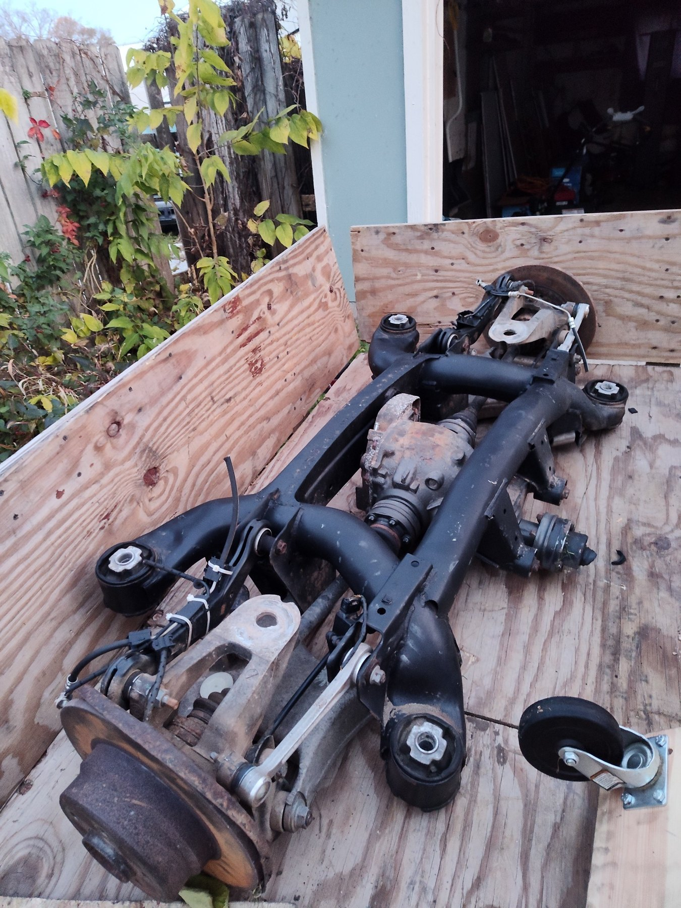
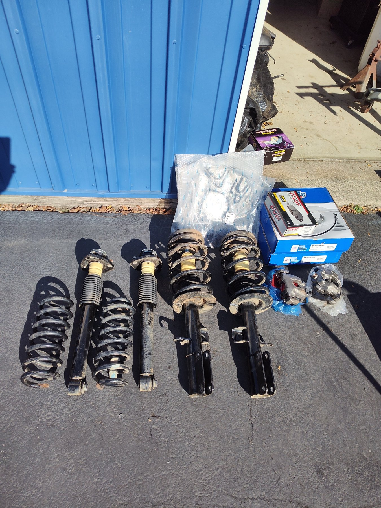
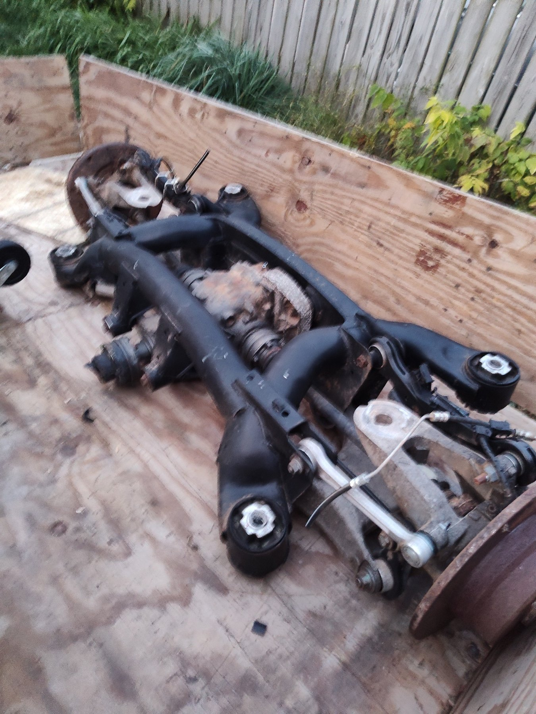
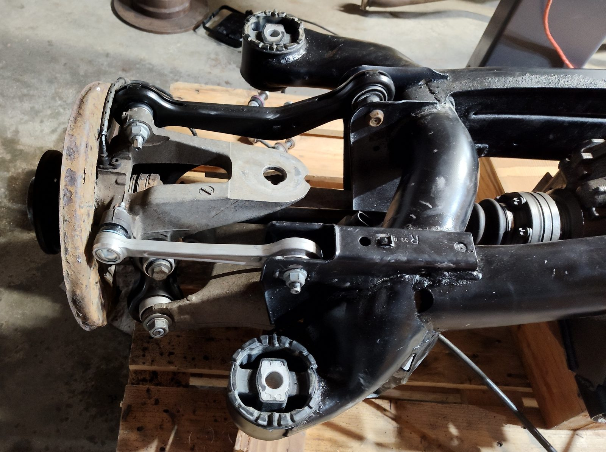
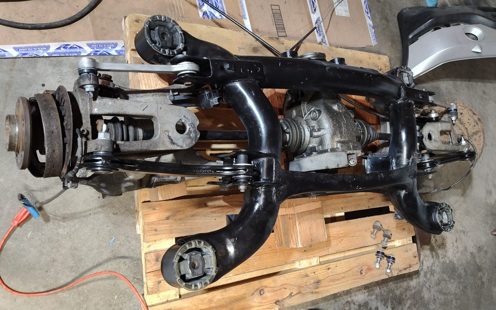
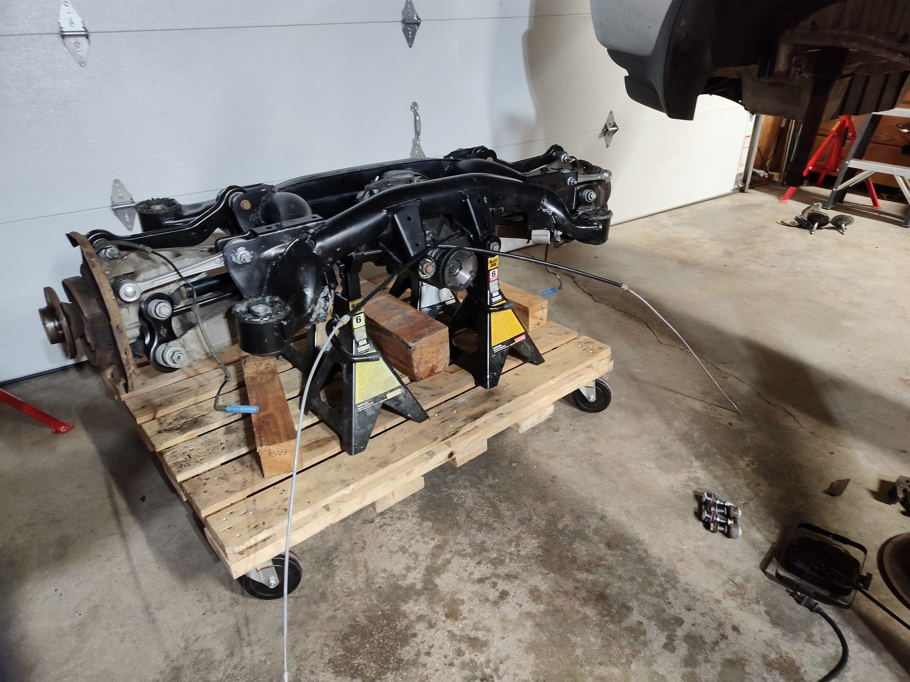

Rear Suspension Assembly for BMW X5 E53
Selling the complete rear suspension cradle assembly, including the differential, CV axles, hubs, and rebuilt suspension components from my 2002 BMW X5 3.0i (E53). The rest of the vehicle has been picked up by a salvage yard and is not included.
The photos show the actual removed assembly, additional included suspension and brake parts, and earlier photographs documenting the rebuild.
Rear Cradle & Suspension Rebuild
Rear suspension extensively rebuilt approximately 4,000 miles ago, mostly highway miles. The original rear subframe was rusted, so it was replaced with a used subframe purchased for $250 before the rebuild. The replacement cradle received new control arms, guide links, integral links, ball joints, sway-bar links/bushings, swing-arm bushings, and all four rear subframe mounts.
The rear cradle was removed from the vehicle before the vehicle was sent to the salvage yard. Included are the rear differential, both CV axles, rear wheel carriers/hubs, rear shocks and springs, both complete front strut assemblies (struts, coil springs and mounts), and new rear dust shields. The differential gear oil was changed approximately 5,000 miles ago. There was substantial labor involved in rebuilding the rear suspension. The entire rear cradle was removed from the vehicle, and installation of the new suspension components required specialty tools and the use of a press.






Rebuild Parts & Documented Costs
Rear suspension rebuild — documented purchase costs
| Part | Part Number | Vendor | Manufacturer | Cost |
|---|---|---|---|---|
| Replacement used rear subframe (original was rusted) | Used | Private purchase | BMW OEM | $250.00 |
| Shock / Strut (pair) — included with sale | 8346181 | RockAuto | FCS | $102.79 |
| Swing Arm Bushing | 3493301 | FCP Euro | Lemförder | $40.76 |
| Subframe Mount Rear (E53) | 33316770454 | FCP Euro | Lemförder | $164.68 |
| Guide Link | 33326774796 | FCP Euro | Lemförder | $114.50 |
| Sway Bar Link | 33551096735 | FCP Euro | Lemförder | $53.68 |
| Integral Link | 33326770749 | FCP Euro | Meyle | $68.78 |
| Swing Arm Bushing | 3493401 | FCP Euro | Lemförder | $21.38 |
| Control Arm | 33326770859 | FCP Euro | Lemförder | $82.99 |
| Control Arm | 33326770860 | FCP Euro | Lemförder | $82.99 |
| Swing Arm Bushing | 3493301 | FCP Euro | Lemförder | $20.38 |
| Sway Bar Bushing | 33551096893 | FCP Euro | Febi Bilstein | $14.38 |
| Ball Joint | 33326767748 | FCP Euro | Lemförder | $71.18 |
Additional Suspension Components Included
Also included are both complete front strut assemblies with the struts, coil springs, and upper mounts already assembled, plus both rear shocks and rear coil springs. The replacement struts and shocks have approximately 2,500 miles of use.
Complete front strut assemblies — documented purchase costs
| Part | Part Number | Vendor | Manufacturer | Cost |
|---|---|---|---|---|
| Complete Front Strut Assembly – Left | 1331713L | RockAuto | FCS | $106.79 |
| Complete Front Strut Assembly – Right | 1331713R | RockAuto | FCS | $106.79 |
Documented parts investment summary
| Component group | Purchase cost |
|---|---|
| Replacement rear subframe | $250.00 |
| Rear suspension replacement parts | $838.49 |
| Complete front strut assemblies | $213.58 |
| Combined documented parts investment | $1,302.07 |
Totals exclude labor, new rear brake rotors, pads, calipers, dust shields, and other components without documented costs in these tables.
New Rear Brake Parts Included
I will also include new rear brake rotors, brake pads, rear brake calipers, and new rear dust shields with the rear suspension package.
Sale Details
Asking price: $900.
Sale is for the retained rear suspension package and the new rear brake parts only. The X5 itself is no longer available. The differential, CV axles, hubs, rear shocks and springs, both complete front strut assemblies (including springs and mounts), and new rear brake parts are included.